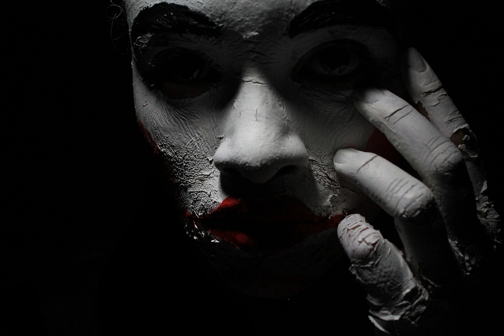

19/12/2023[Javier.T.]
La historia de la sonrisa del payaso es un clásico en los colegios mayores de Madrid, aunque se ha ido extendiendo al resto la comunidad universitaria. Una joven esperaba el autobús de noche en una de las marquesinas de la zona de Metropolitano, el principal núcleo de colegios mayores de la capital. La zona está rodeada de los parques que forman el campus universitario y, junto con las facultades vacías, logran un perfecto escenario de película de terror. La espera de la joven fue interrumpida cuando un grupo de jóvenes, supuestamente de aspecto skinhead, que la sacó de sus pensamientos. Empezaron a hablar y a burlarse de ella y, después, comenzaron a forzarla. Para hacer aún más macabro el forcejeo, le dibujaron la 'sonrisa del payaso' para poder violarla sin que ella pudiese gritar. Este tipo de tortura consiste en hacerle a la víctima un corte en cada lado de la comisura de los labios, de forma que si abre la boca para gritar, la herida se desgarra. Los rumores de este tipo de agresión fueron tan fuertes que, en 2003, los directores de varios colegios mayores madrileños tuvieron una serie de reuniones para investigar e intentar poner fin a esta alarma que se extendía entre los jóvenes universitarios. Como la mayoría de las leyendas, no se pudieron contrastar los hechos, ya que ningún hospital de Madrid había registrado un paciente con ese tipo de agresión.